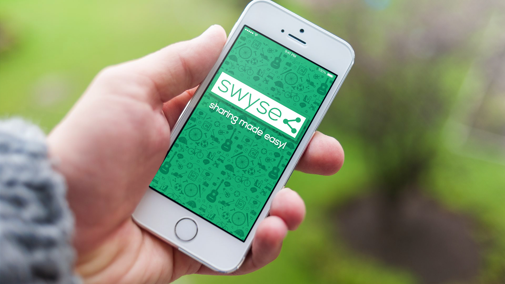
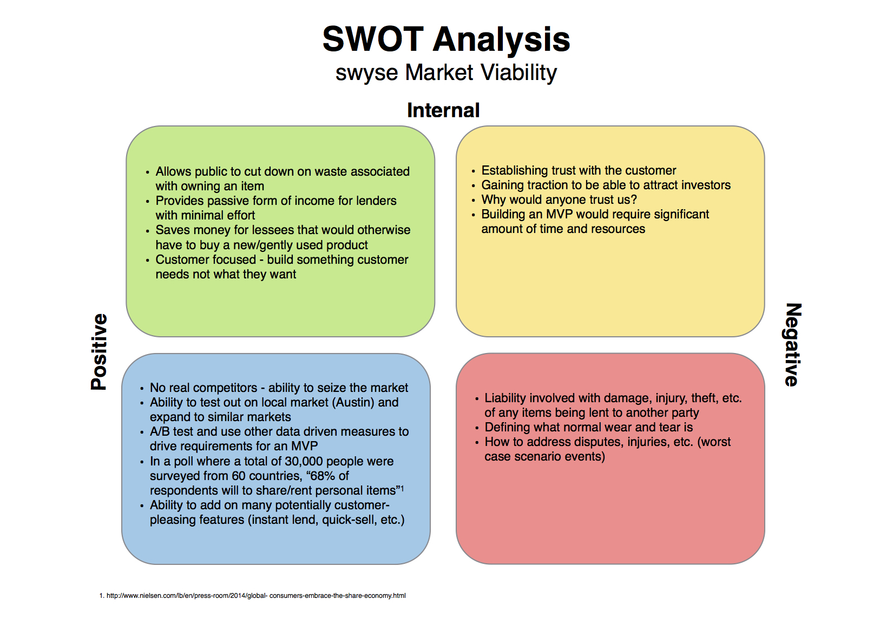
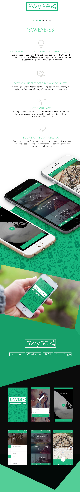

Think about this: You've been doing some research online and you decided you want to try your hand at building some rustic, industrial-looking furniture. You focus on getting all of the materials and realize you don't have any of the proper tools. What are your next steps? In the society we live in today, if we need a tool or object to complete any type of task and we don't have it, we are left with the following options: buy it new, buy it used, or borrow it from a friend. Now this is a crazy thought: what if there was a 4th option - leasing an item from someone you don't know? By conducting contextual inquiry on this idea, we found that an overwhelming majority of people wished there was the option of leasing items for a short amount of time. The next step was to see how far other companies have gone to deliver this service. Via competitive analysis, it was discovered that none of the businesses existing had any type of edge that would corner the market. The best option resembled a slightly jazzed up craigslist. Thus, swyse ('SW-EYE-SS') is born.
Essentially, how could we build a marketplace that would allow for people with extra goods sitting around to mingle with the people who just want to use them momentarily? And how do we delight both the lender and the lessee to the point where they can't wait to use the service again and end up telling all of their family and friends about it?
First, we have to define who the user is and pinpoint the specific market that has already wished there was something like this that exists. So who are they? Not, who are the type of people who would use this service, in general. Who would be our early adopters - our feedback control loops and 1000 true fans? The following qualities are what we targeted in our users:
Now that we know who our users are, how do we make sure that they will love to use our service and can't wait to come back for more? We ensure that we keep the experience as simple and pleasing to the eye as possible. We do that by focusing on visual and UI/UX design of the product (scroll below), delivering it to the users, and getting their feedback. We conduct A/B testing, more contextual inquiry, and user-story mapping to amass data. We then interpret that data, drive decisions based on it, and mold it into something we believe they need, continuously iterating until we know that's what they need.
With current sharing economy companies, such as Uber and Airbnb, swyse seemed like a no-brainer next step venturing into possessions. Therefore, one of the critical questions we felt was important to answer at beginning stages was, "Why isn't there a solution on the same scale as these companies?". We could not figure it out at first. Thus, we employed a SWOT analysis to identify the internal/external strengths and weaknesses of the product, so we could identify areas where the product would outperform competition and also where short and long term potential problems would lie. What we concluded was that the legal implications of a platform to share and lease anything was far too broad. We came up with scenario after scenario. For example, do you let someone put up their chainsaw to lend? What type of precaution should be taken? What happens in a worse case scenario event? And this was just one item. On another note, how do you handle damage disputes if one party believes that they lessee returned their property in less than favorable condition? As one can see, the real life user story mapping for a service such as this quickly turned negative when those aspects of the business were more deeply explored, therefore it was decided to shelve the product.
An immense amount of skills were gained and used over the course of developing this product. On the business side: entrepreneurial/vision-following, networking, product marketing, competitive analysis, lean startup method, bootstrapping, lean canvas, monetization, SWOT analysis, search engine marketing (Google AdWords, Analytics), and landing pages. In terms of design: branding, logo design, user story mapping, wireframing, UX/UI, and working with creative-types. With Engineering: looking to source a co-founder engineer then utimately deciding to learn iOS development, app architecture, Agile methodology and the time and intricacies associated with software development.

